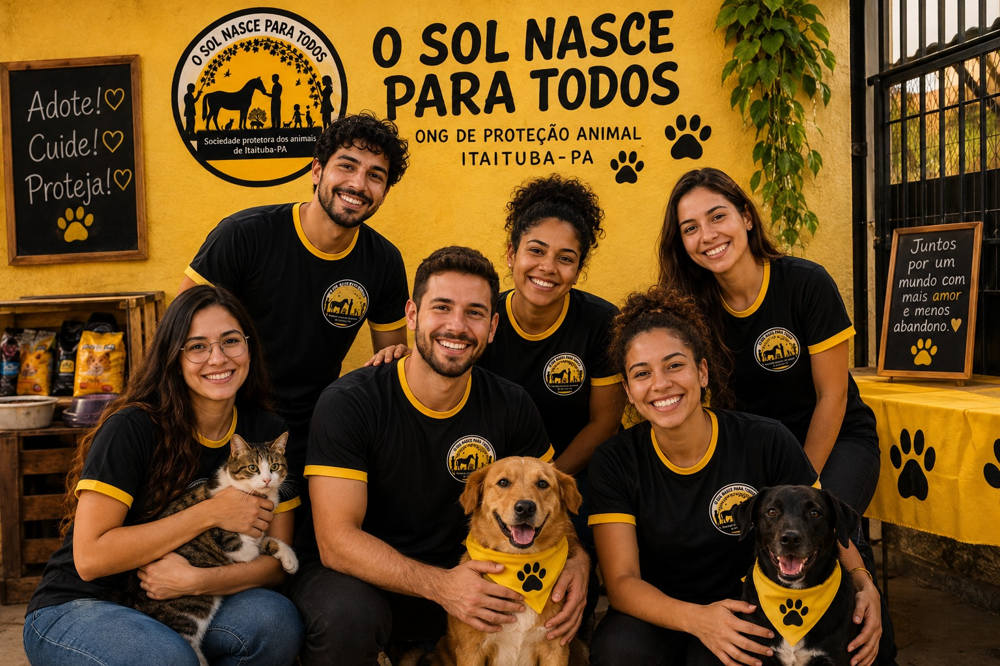

Nossa História
O O Sol Nasce Para Todos é uma organização de proteção animal presente em Itaituba (PA), dedicada ao acolhimento e cuidado de animais em situação de vulnerabilidade, promovendo o bem-estar e a adoção responsável. 🐾
Este site foi inspirado na história e no trabalho da ONG, mas é um projeto totalmente fictício e acadêmico, desenvolvido exclusivamente para praticar HTML e CSS, sem vínculo oficial com a instituição.
